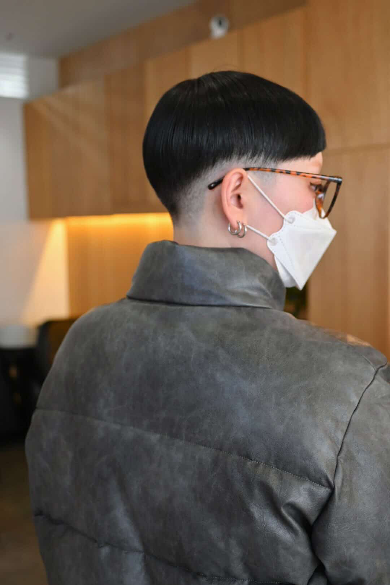

ABOUT

佐藤 来海
1996年生まれ、福島県出身。高校卒業後、デザイン系専門学校でグラフィックデザインを学び、その後編集プロダクションに入社。映画やアニメ、ヘルスケア、トラベル、グルメなど様々な媒体（紙・Web）で記事の編集を担当。
編集をおこなうなかで、「やっぱりデザインがやりたい！」という気持ちが強まり、現在はデザイナーに再挑戦すべく、デザインの復習とコーディングの履修に奮闘中。
好きなものは、アイドル、パン（食べる・作る両方）、アニメ、運動。
SKILLS
デザイン
Illustrator
Photoshop
InDesign
Figma
学生時代にデザインを学び、その後も自主制作をしたり、前職でもDTPやチラシ、名刺、図版などの制作を担当していたので、デザインスキルには自信があります！ またエディトリアルデザインを専攻していたので、InDesignの操作も問題ありません。
コーディング
HTML
CSS
JavaScript
WordPress
職業訓練校でHTML・CSS、JavaScript（jQuery）、WordPressを学んでおり、家にいる時間は自主制作をおこなっています。デザインスキルと組み合わせ、様々なサイト制作に挑戦しています。
イラスト作成
Procreate
MediBang Paint
趣味で長年イラストを描いており、知人からの紹介でクライアントワークとしてイラスト制作を行う場合もあります。前職では、人気映画作品のオフィシャル小冊子のイラストを担当させていただくこともありました。
ライティング
コラム
コピー
編集者として原稿執筆やコピーの作成をおこなってきましたので、ライティングには自信があります！ 趣味でブログやnoteを書いたりもしています。
STRENGTH
コミュニケーション能力
人と話したり交流することが好きなので、ほかの方と協力しながらプロジェクトを進行することには自信があります！ また、あいさつや感謝、謝罪、約束を守ることを大事にできる人間であろうと努めています。
デザインスキル
専門学校で2年間グラフィックデザインについて学び、前職入社後もPhotoshopを用いた画像加工や、Illustratorでのデザイン作成、InDesignでのDTP作業などをおこないました。また、Web分野のデザイン・コーディングについても勉強中です。Word、Excel、PowerPointなど、基本的なPCソフトの操作も問題ありません。
ディレクション能力
編集者として、企画やラフの作成、進行管理などをおこなってきましたので、作る部分だけでなく、プロジェクトの全容を把握し、なにが必要なのかを判断しながら進めることができます。
BIOGRAPHY
- 1996.10
- 福島県生まれ。小学・中学時代はバレーボールに打ち込み、母がコーチだったこともありしっかりとしごかれる。また、物心がつく前には絵を描くのが好きになり、高校では美術部に転身。ものづくりに関する仕事に就くことを決意する。
- 2015.04
- 上京し、デザイン系の専門学校で主に印刷系のデザインを学ぶ。生きてきた環境との違いにすさまじい刺激を受け、街で見かける“デザイン物”の多さに圧倒され、感銘を受ける。
- 2017.05
- 専門卒業後、出版系デザインのスキルと文章を書くのも好きだったことを活かし、編集プロダクションに入社。エディターとして、エンタメ系を中心に雑誌やWebサイトの編集を担当。エンタメ好きだったことで日々の情報収集が生き、それを用いて多数のコラム記事などを制作する。
- 2026.03
- 次のキャリアに挑戦したくなり、編集プロダクションを退職。紙はやったので、Webもできる二刀流になるべく職業訓練校でWebデザインに関する知識を学ぶ。HTML・CSSがあまりにもおもしろく、四苦八苦しつつも平日も休日も空いている時間のほとんどを自主制作に費やす。